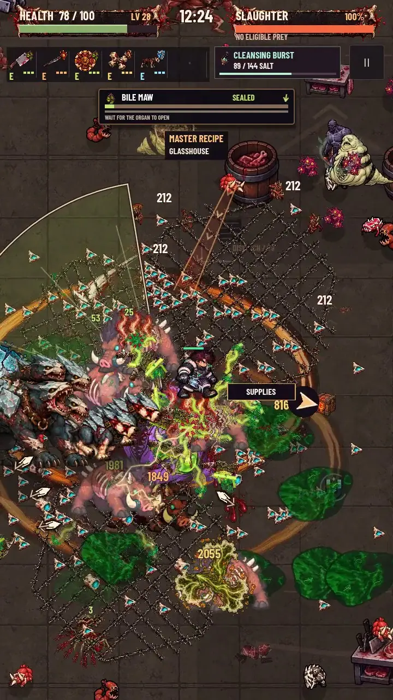
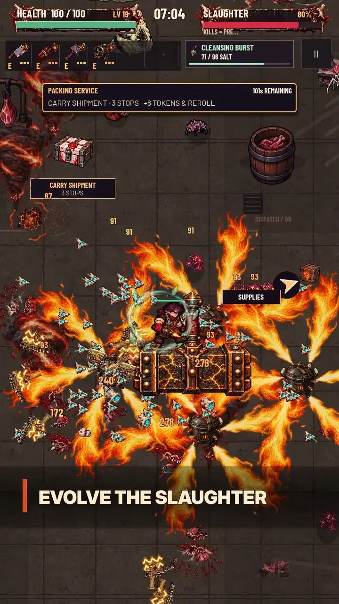
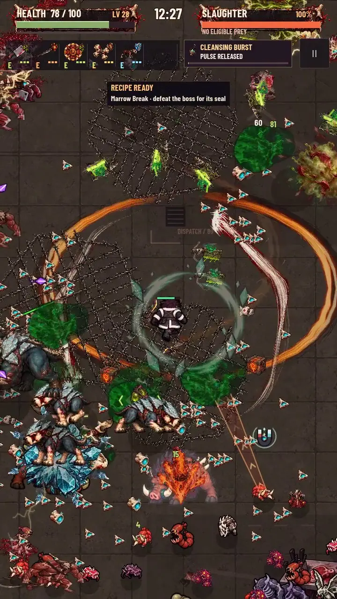
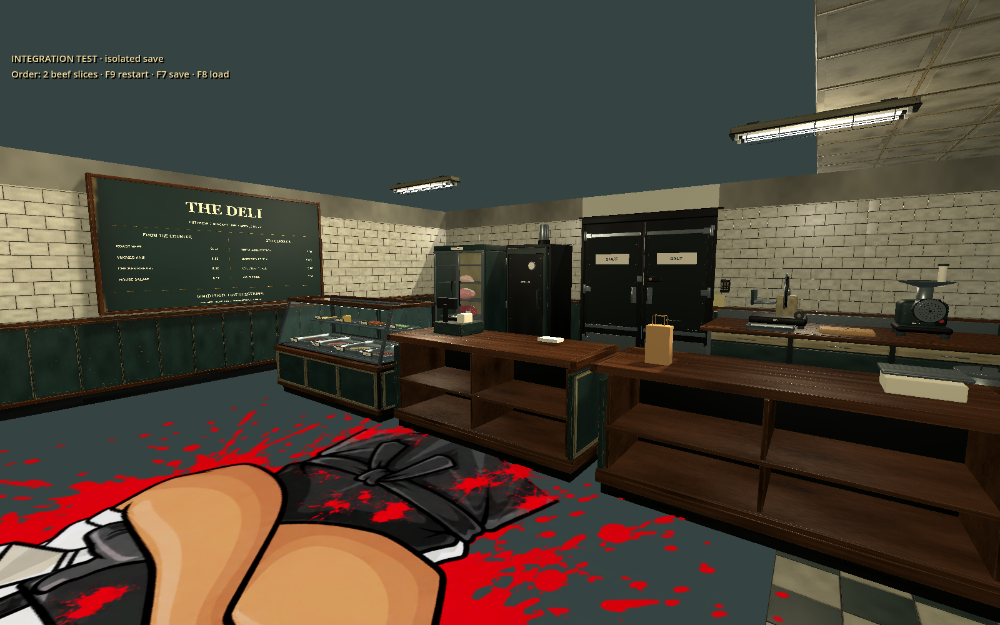
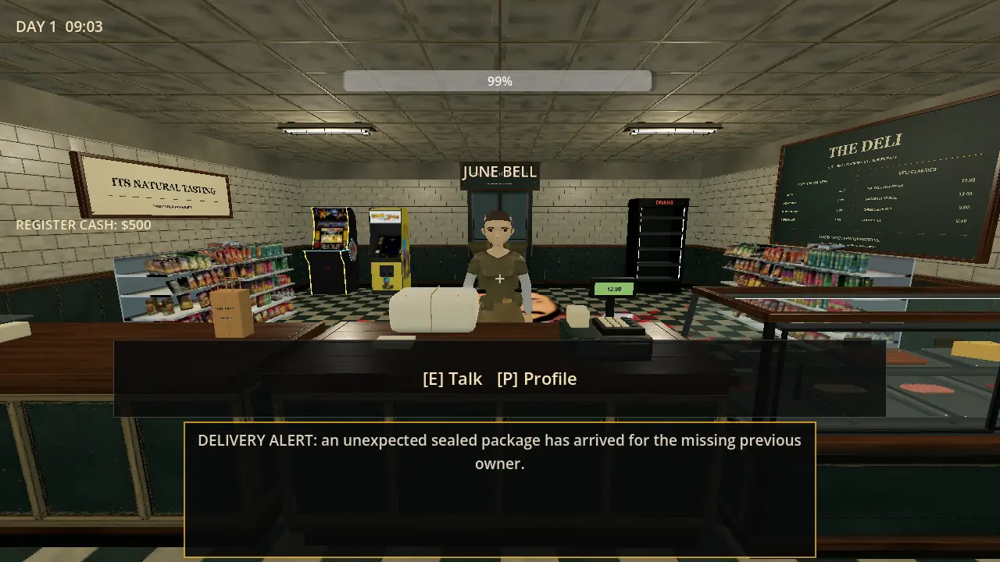
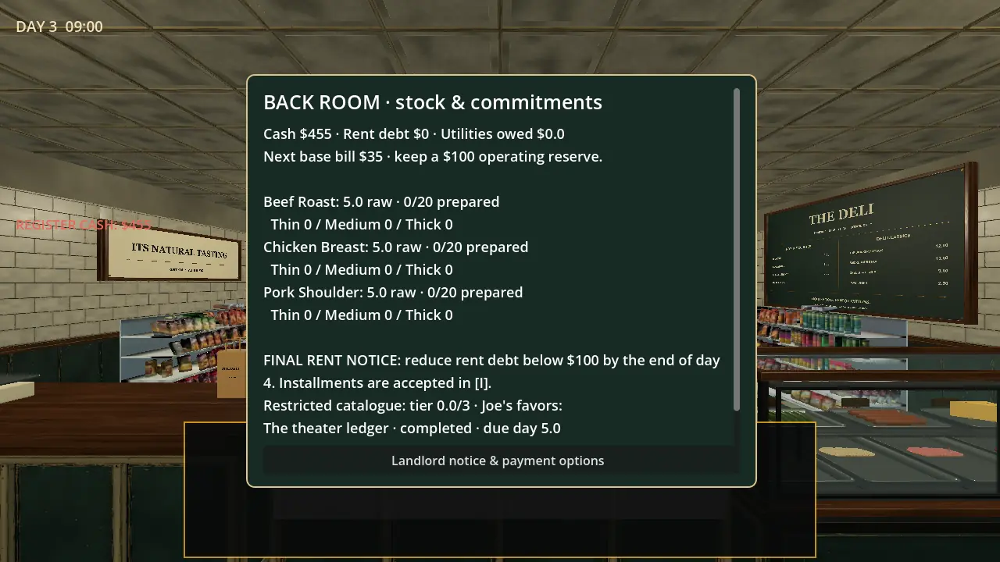
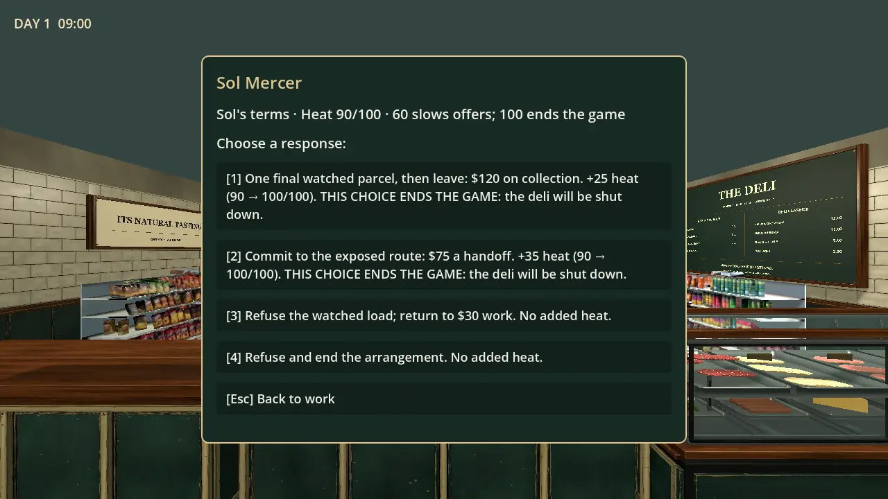
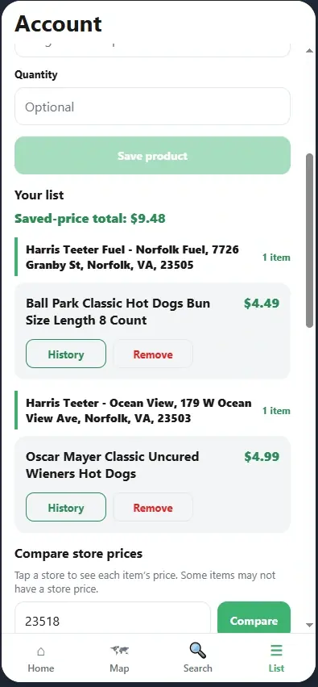
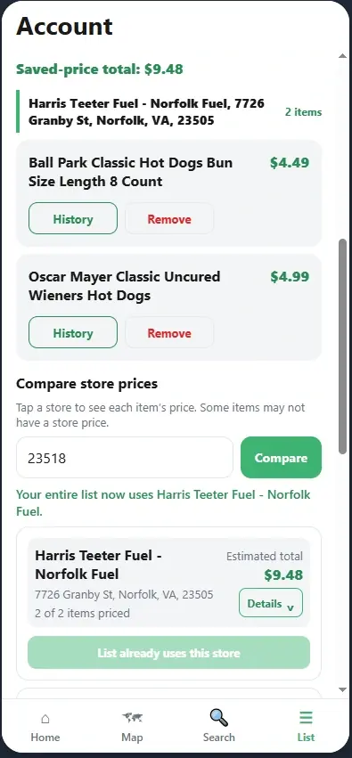

Define the work
Turn rough gameplay goals and device bugs into scoped tasks with clear acceptance criteria.
NORFOLK, VIRGINIA · BS COMPUTER SCIENCE / DEC 2026
I work across software development, quality assurance, and AI-assisted implementation. My projects range from an Android game in Google Play closed testing to a systems-driven 3D deli simulation and a collaborative grocery comparison app.

01 / INDEPENDENT ANDROID DEVELOPMENT
A portrait-mode action-survivor game built around weapon progression, enemy encounters, elemental attacks, and evolving combat systems. My role combines project direction, AI-assisted development review, Android device testing and release preparation.
BUILD MILESTONE
Turn rough gameplay goals and device bugs into scoped tasks with clear acceptance criteria.
Use AI coding tools, inspect changes and evidence, and check behavior against the intended result.
Coordinate regression checks, on-device reviews, issue handoffs, signed bundles and tester onboarding.


Evidence note. Trailer shots were captured through an in-engine staging harness using actual game systems. The footage is not an uninterrupted normal playthrough. I direct the project and review AI-assisted implementations; I do not claim every line of code was written manually.
02 / INDEPENDENT 3D SIMULATION + SYSTEMS DESIGN
A first-person deli management and branching narrative simulation where stock, customer orders, kitchen workstations, dialogue decisions, and economic pressure are interconnected. The playable build goes far beyond an interior walkthrough.

SERVICE + INVENTORY
Five-position customer queue, stock-aware orders, slicing with thickness and quality timing, packaging, register checks, cool storage, expiration-aware prepared inventory, grinder and smoker.
BRANCHING NARRATIVE
Named recurring customers, Joe's three-visit introduction and cover request, Denton/Sol parcel negotiations, and an unlockable exotic-meat supply route. Dialogue state resumes after customer service.
RISK + ECONOMY
Cash flow, daily rent and utilities, landlord notices and extensions, explicit choice-driven heat, and two playable failures: DELI SHUT DOWN (heat) and EVICTION NOTICE (unpaid rent).
ENGINEERING + QA
JSON saves preserve customer queues, dialogue choices, prepared items, partly cut meat, physical packages and in-progress station timers. A 25-case checkpoint harness supports repeatable integration testing.




Core counter loop, day/night shifts, inventory and workstations, Joe/parcel/supply stories, transparent heat, rent pressure, kitchen-state save/load, and two active failure states.
The larger numerical trust/loyalty system, rumor and snitch network, detective evidence boards, and additional endings exist as experimental or planned work but are not active in the main scene.
Evidence note: Details reflect the 14 Nov 2026 code-and-test audit supplied for the project. Images are genuine in-engine captures; the Customer View image is an integration preview, and the financial/heat warning screenshots use deliberately seeded test states. The Deli is a development prototype, not a released game.
03 / COLLABORATIVE SOFTWARE
A grocery-price comparison application developed with an Old Dominion University team. My documented focus is presentation integration, requirements communication, and helping explain features and cross-component workflows.


React Native / Expo, TypeScript, Fastify, and PostgreSQL / Supabase.
Requirements communication, team presentations, technical explanations, and coordination of development materials.
The application and interface are team work; I do not claim sole implementation.
Team source repository ↗HOW I APPROACH SOFTWARE
Reproduce the defect, define expected behavior, review the change, then verify it against both test evidence and real device behavior. A passing scripted test is useful evidence, not proof that the entire experience works.
I use coding agents as implementation tools, not as a substitute for review. I scope their tasks, assess resulting work, and keep a record of what was tested and what still needs acceptance.
Additional background: 10+ years of independent computer repair and technical troubleshooting; U.S. Marine Corps electrical equipment technician (2007–2011).
DOWNLOADABLE DOCUMENTS
GET IN TOUCH
I'm seeking entry-level opportunities in software engineering, AI-assisted application development, and software quality assurance.